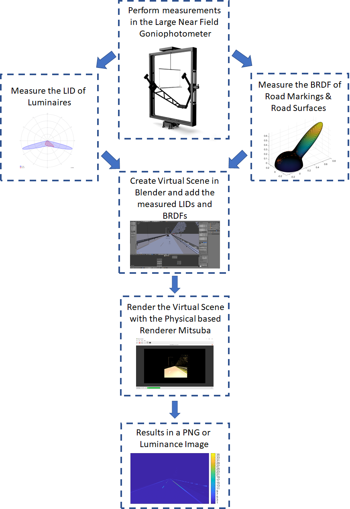

As a passionate researcher and specialist in electrical engineering, human perception and lighting, I have spent several years exploring the interplay between visual perception and the environment. I have a bachelor's and master's degree in Human Technology Interaction, where I focused on lighting and visual perception. During my academic journey, I had the opportunity to intern at Signify/Philips Lighting and spend six months at the Munsell Color Science Laboratory (USA) as part of a student exchange program.
Currently, I am a joint PhD student at KU Leuven and the University of Technology Eindhoven, working on a cutting-edge road lighting project for Rijkswaterstaat. My research involves developing a new road lighting concept by utilizing signal processing, image processing, machine learning, and deep learning. Through my work, I aim to create a safer and more comfortable driving experience for road users.
I am an avid researcher and have published several papers in the field of human perception and lighting, including exploring the applicability of the unified glare rating for an outdoor non-uniform residential luminaire, reflection measurements and a new road marking BRDF model applicable for a wide range of incident illumination conditions, and revisiting the road marking contrast threshold model. My research has shown good agreement with existing models and has also contributed to defining contrast thresholds for several other image-based contrast models.
As a researcher, I have a keen eye for detail and enjoy working on complex problems that require a multidisciplinary approach. I am highly skilled in various technical areas, including signal processing, data analysis, image processing, and deep learning. My ability to work well in teams, communicate effectively, and my passion for innovation and research make me an asset to any team.
Human perception of the world is not absolute. The visual perception of our surrounding depend on various aspects of the environment, such as the reflection properties of the objects in the environment, the illumination, the adaptation state of the human visual system and many more.
MATLAB is a proprietary multi-paradigm programming language and numerical computing environment developed by MathWorks.
Python is an interpreted, high-level and general-purpose programming language.
SPSS Statistics is a software package used for interactive, or batched, statistical analysis.
Blender is a free and open-source 3D computer graphics software toolset used for creating animated films, visual effects, art, 3D printed models, motion graphics, interactive 3D applications, virtual reality and computer games.
Mitsuba is a research-oriented rendering system in the style of PBRT, from which it derives much inspiration.
DIALux is the leading software for lighting design.
Stata is a general-purpose statistical software package created in 1985 by StataCorp. Stata's capabilities include data management, statistical analysis, graphics, simulations, regression, and custom programming.

The development of light emitting diodes (LEDs) technology has enabled inexpensive ways to create colored and dynamic light effects. However, current knowledge on human perception of dynamic colored light is still insufficient to provide guidelines for comfortable and attractive implementations. A uniform color space for dynamic light is needed for this goal, and chromatic flicker is a useful paradigm to study the sensitivity of human observers to color differences in the temporal domain. The ability to detect chromatic flicker depends on the temporal frequency (i.e. the temporal contrast sensitivity function, TCSF). Three experiments were carried out to measure TCSFs for isoluminant chromatic flicker stimuli at fifteen base colors, four modulation directions (in CIE 1976 UCS color space) and three frequencies. In Experiment 1, isoluminant settings, which were expressed as luminance ratios, for chromatic flicker were measured for 15 participants. The results showed inter-individual differences in luminance ratios and main effects of base color and modulation direction. In Experiment 2, TCSFs were measured (and modelled) for three participants using their individual luminance ratios for iso-luminant stimuli. The results confirmed that TCSFs for chromatic flicker can be modelled with an exponential function. Besides, there were significant main effects of participant, base color, modulation direction and some interaction effects on the intercept and slope of the TCSFs. Specifically, the main effects of base color were driven primarily by the L- and S-cone activations. Experiment 3 replicated experiment 2 for a subset of base colors using the average luminance ratios across the fifteen participants from Experiment 1. No significant difference between visibility thresholds from both experiments was found, indicating that average luminance ratios can be used to measure and model TCSFs for chromatic flicker. Steffen Hartmeyer, Rik Spieringhs, and Paul Wijsen, 2018.
In the late 1920’s researchers like William David Wright and John Guild became interested in the possibilities to define quantitative links between the physical electromagnetic spectrum and colors perceived by human observers. These independently performed studies, by William David Wright and John Guild, resulted in the CIE 1931 RGB color space determined by the International Commission on Illumination (CIE) in 1931. The color space maps the scope of all possible physical light spectra to an objective description of these colors, based on color matching experiments by metamerism. Color matching functions were fundamental for the reproduction of images by just red, green and blue lights. Upon knowing that images could be reproduced by just red, green and blue lights, engineers started to create the first most famously adopted electronic cathode-ray-tube (CRT) display. CRT displays used three electron emitters (for red, green and blue) to focus electronic beams into specific focusing and deflection coils. At the time of this study, however, these CRT displays were mostly replaced by its successor, namely the liquid crystal displays (LCD). LCDs were superior to the predecessor in their qualification of spatial uniformity, sharpness, contrast ratio and luminance. LCD based monitors were largely used in the industry as well as in visual experiments. Some visual experiments included colors to determine certain relationships between and within participants. A high colorimetric accuracy was, therefore, of utmost importance for conducting these visual experiments. To optimize the colorimetric accuracy several characterization techniques were used. The traditional characterization techniques were well summarized by Berns, in his paper about the methods for characterizing CRT displays. The traditional techniques tried to characterize the electro-optical transfer functions of the display with the least colorimetric differences between measured and predicted color coordinates. A common technique used to determine these color differences was the color difference formula CIEDE2000.
The study by Fairchild and Wyble, on the colorimetric characterization of an LCD, investigated the GOG model and the look-up table (LUT) model. The results of this study indicate that the GOG model was limited in its performance compared against the one-dimensional LUTs to characterize the electro-optical functions. The researcher, however, did note that the LUT model was still not perfect and further improvements should be applied. The study of Day, Taplin and Berns, on the colorimetric characterization of an LCD, revised this LUT technique and improved it with a nonlinear optimization to optimize the LUTs with minimal CIEDE2000 color differences.
The current experiment was aimed at exploring the LUT technique and the colorimetric characterization and evaluation of an HP Compaq LA2205wg LCD. The experiment consisted of measuring different colors projected on the LCD, creating a model with the measured 1931 CIE XYZ values, and evaluating the model with a verification procedure. In the experiment, a spectroradiometer was aimed orthogonal to an LCD. A laptop was connected to the LCD and projected full colored figures by their digital counts. The spectroradiometer was connected to the same laptop and provided the CIE 1931 XYZ coordinates for each colored figure. The CIE 1931 XYZ coordinates for each predetermined digital count combination was stored inside a matrix in Matlab. Rik Spierings 2018.
Chromatic adaptation is an extensively studied concept. However, less is known about the time course of chromatic adaptation under gradually-changing lighting. Two experiments were carried out to quantify the time course of chromatic adaptation under dynamic lighting. In the first experiment, a step change in lighting chromaticity was used. The time course of adaptation was well described by the Rinner and Gegenfurtner slow adaptation exponential model, and the adaptation state after saturation differed between observers. In the second experiment, chromatic adaptation was measured in response to two different speeds of lighting chromaticity transitions. An adjusted exponential model was able to fit the observed time course of adaptation for both lighting transition speeds. Rik Spierings, Michael Murdoch, and Ingrid Vogels, 2019.
In lighting research, researchers often create (or simulate) controlled visual environments, in which researchers can manipulate one factor at a time. In daily life, however, the visual environment is less controlled and much more complex, both spatially and spectrally. Current color spaces have aimed to best predict the chromatic discrimination of colored targets at variant visual environments. The color discrimination at photopic vision has been extensively studied. However, often used color spaces were less representative of the chromatic discrimination at lower light levels. Previous research about color discrimination has shown that the color rendition, luminance, the spectral power distribution, and age are important factors for chromatic discrimination. Furthermore, previous research reported tritan like effects caused by weak S-cone mediated hue signals at mesopic light levels. Based on the previous studies about chromatic discrimination, showing that luminance and the spectral power distribution of the light source influenced the chromatic discrimination, we were interested in the influence of luminance at the standard illuminant C, on the chromatic discrimination for mesopic and photopic light levels. Additionally, we were interested in how to further explain and model this large S-cone mediated variation in cap order found at the mesopic light levels. An experiment was carried out to investigate the differences in chromatic discrimination for different light levels and age groups. Five different illuminance levels, two different age groups and the color cap ordering of the four different trays of the FM-100 hue color vision test were included. The calculated error score of the FM100-Hue test was an indication of the chromatic discrimination under illuminant C. The results of the experiment confirmed that there were significant differences in chromatic discrimination between light levels, especially at the lower light levels. Besides the main effect of light level, there was a significant interaction effect on the error score between the light level and the age group. The post hoc analysis of the interaction effect showed that the younger age group on average had a lower error score at the lowest light level than the older age group. An attempt to model the chromatic discrimination at mesopic light levels was made. Threshold detection ellipses were estimated for two detection coefficients and predicted the data for a root mean squared error of less than 0.08. An inequality was observed in the detection functions which indicated the inaccuracy of the human visual system to discriminate colors along the tritan axis at mesopic light levels. Rik M. Spierings, Raymond Cuijpers, Marcel Lucassen, Jan Souman, Kees Teunissen, Ingrid Vogels, and Karin Smolders, 2019.
Sufficient contrast between road surface and road markings is key for a safe and comfortable driving experience. This calls for a comprehensive and well established contrast (threshold) model, which ideally results in a single contrast threshold value independent of object angular size or road luminance. The contrast threshold model introduced by Adrian is still commonly used in road lighting. More recently, new contrast metrics that also predict supra-threshold contrast visibility have been proposed, but the corresponding visibility thresholds are not yet known. In the present study, participants are presented a rendering of a highway, including road marking arrows of various size and luminance and were asked to indicate the direction of the arrow. The luminance of the road surface, acting as background for the markings, was varied too. Due to the very low luminance values and the very small differences in luminance, measurement accuracy and calibration issues require special attention. The results show good agreement with Adrian’s visibility model (R2 = 0.75) in terms of luminance contrast, background luminance and size. In addition, we used our experimental data to define contrast thresholds for several other existing image based contrast models. Unfortunately, it seems to be impossible to state one unique threshold contrast value independent of object angular size and road luminance.Rik M. Spierings, Kevin G. Smet, Ingrid Heynderickx and Peter Hanselaer, 2021.
Brightness is one of the most important perceptual correlates of color appearance models (CAMs) when self-luminous stimuli are targeted. However, the vast majority of existing CAMs adopt the presence of a uniform background surrounding the stimulus, which severely limits their practical application in lighting. In this paper, a study on the brightness perception of a neutral circular stimulus surrounded by a non-uniform background consisting of a neutral ring-shaped luminous area and a dark surround is presented. The ring-shaped luminous area is presented with 3 thicknesses (0.33 cm, 0.67 cm and 1.00 cm), at 4 angular distances to the edge of the central stimulus (1.2°, 6.4°, 11.3° and 16.1°) and at 3 luminance levels (90 cd/m2, 335 cd/m2, 1200 cd/m2). In line with the literature, the results of the visual matching experiments show that the perceived brightness decreases in presence of a ring and the effect is maximal at the highest luminance of the ring, for the largest thickness and at the closest distance. Based on the observed results, an image-based model inspired by the physiology of the retina is proposed. The model includes the calculation of cone-fundamental weighted spectral radiance, scattering in the eye, cone compression and receptive field post-receptor organization. The wide receptive field assures an adaptive shift determined by both the adaptation to the stimulus and to the background. It is shown that the model performs well in predicting the matching experiments, including the impact of the thickness, the distance and the intensity of the ring, showing its potential to become the basic framework of a Lighting Appearance Model.Thanh H. Phung, Rik M. Spieringhs, Kevin G. Smet, Frederic B. Leloup and Peter Hanselaer, 2022.
The Unified Glare Rating (UGR) and the modified version (UGR') have been developed for a luminaire in a typical indoor environment. In this paper, the application of these metrics is explored for an outdoor residential luminaire with a non-uniform spatial luminance distribution. The luminaire was characterized in a large near field goniometer (NFG) and luminance images were created at four angles specified in the CIE 232:2019 document. Some practical issues of applying the UGR' for a non-uniform residential luminaire are discussed, such as selecting the luminous area, the blurring parameter and the background luminance. Rik M. Spieringhs, Thanh H. Phung, and Peter Hanselaer, 2022.
The Unified Glare Rating (UGR) and the modified version (UGR’) have been developed and widely accepted in multiple standards for measuring the discomfort glare of a luminaire in typical indoor environments; however, a standardized glare metric for non-uniform outdoor luminaires is still missing. In this paper, the possibility to apply UGR and UGR’ to an outdoor residential luminaire with a non-uniform spatial luminance distribution is explored. The luminaire was characterized in a large near-field goniophotometer (NFG) and luminance images were captured at four angles specified in the CIE 232:2019 document. Some practical issues of applying the UGR’ for a non-uniform residential luminaire are discussed, such as selecting the luminous area, the blurring parameter, the viewing angles, and the background luminance. In addition to these practical issues, possible solutions and suggestions are explored, such as a different blurring parameter, viewing angle, and background luminance. In the end, employing a human visual system to evaluate the amount of discomfort glare for both indoor and outdoor applications might be preferred. Rik M. Spieringhs, Thanh H. Phung, Jan Audenaert, and Peter Hanselaer, 2022.
To drive safely and comfortably, an adequate contrast between the road surface and road markings is needed. This contrast can be improved by using optimized road illumination designs and luminaires with dedicated luminous intensity distributions, taking advantage of the (retro)reflective characteristics of the road surface and road markings. Since little is known about road markings’ (retro)reflective characteristics for the incident and viewing angles relevant for street luminaires, bidirectional reflectance distribution function (BRDF)-values of some retroreflective materials are measured for a wide range of illumination and viewing angles using a luminance camera in a commercial near-field goniophotometer setup. The experimental data are fitted to a new and optimized “RetroPhong” model, which shows good agreement with the data [root mean squared error (RMSE)<0.13, normalized root mean squared error (NRMSE)<0.04, and the normalized cross correlation ratio (NCC)>0.8]. The RetroPhong model is benchmarked with other relevant (retro)reflective BRDF models, and the results suggest that the RetroPhong model is most suitable for the current set of samples and measurement conditions. Rik M. Spieringhs, Jan Audenaert, Kevin G. Smet, Ingrid Heynderickx, and Peter Hanselaer, 2023.